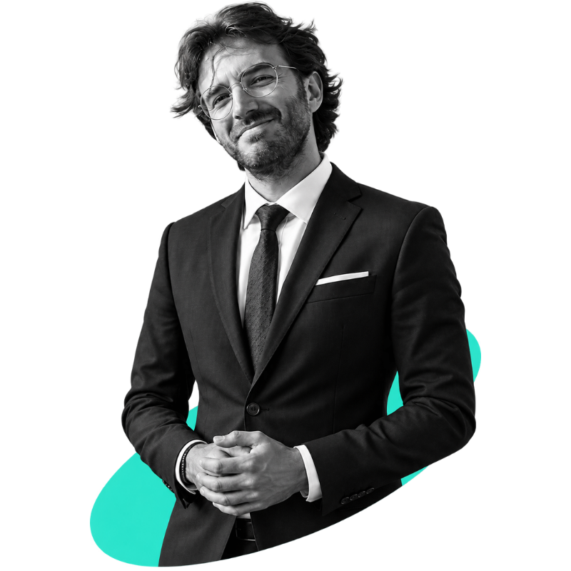
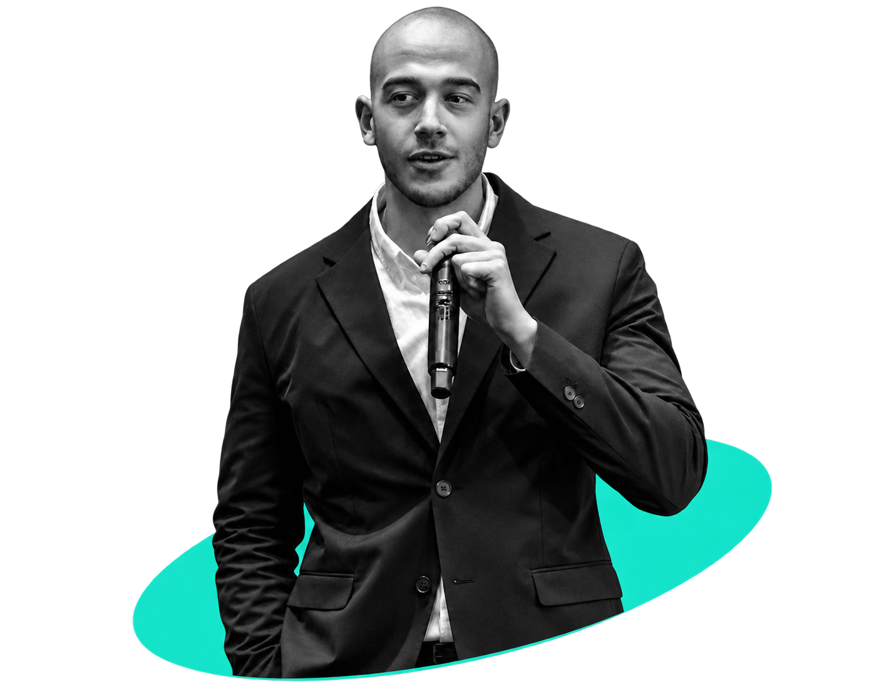

Calybrix makes it possible to monitor the assets that industrial and power plants have always had to leave unseen and understand when something starts to go wrong.
Power generation plants, combined-cycle facilities in particular, run on dozens of rotating and electrical assets. A single failure can trigger a plant trip or take the unit offline, incurring significant availability penalties. As in industrial plants more broadly, an unplanned failure halts production, with costs that can reach millions of dollars per hour.
This is what we found in a real gas plant. Out of 350 motors, only 12 were continuously monitored. The other 338 weren't unimportant monitoring them simply wasn't economically viable.
And this is not just a coverage problem. Most predictive maintenance systems learn from historical failures: they recognise what they have already seen. When a new anomaly appears, or a failure originates somewhere outside the machine itself, identifying the cause becomes much harder.
The problem isn't a lack of predictive maintenance. It's the lack of visibility across the majority of industrial assets.
Calybrix combines low-cost sensing with physics-informed intelligence to monitor industrial assets that are currently left unobserved. Each Hummingbird collects mechanical, electrical and process data, then learns how that specific machine should behave.
Each asset model continuously processes and separates meaningful signal from operational noise and adapts as the machine changes over time.
The system connects assets across the plant to understand dependencies and trace how a fault propagates.
Multiple models evaluate critical events before an alert becomes an operational recommendation.
Our entry point is the industrial motor: a widely deployed asset, often critical to the process, but rarely monitored because the economics don't justify traditional systems. At €100 per asset per year, the market is measured in installed assets, not in the number of industrial sites.
We start with motors, but the same sensing architecture can extend to pumps, compressors, fans, HVAC systems and electrical assets such as transformers. That represents more than one billion electromechanical assets worldwide at our target price point.
Around 200 million of those assets operate in critical industries: power generation, refining, petrochemicals, critical HVAC and high-volume manufacturing. These are environments where downtime creates a direct and measurable economic loss.
Our initial target is 1% of the serviceable market. We enter through gas power generation, where a typical plant contains hundreds of motors and provides a clear land-and-expand path into adjacent assets and additional sites.
Hardware costs have fallen.
Low-cost MEMS sensors, wireless connectivity and edge computing
now make continuous monitoring economically viable for assets that
were previously too expensive to instrument.
Industrial assets are becoming more critical.
New power demand, ageing infrastructure and increasingly complex
industrial systems increase the cost of unexpected failure.
Downtime is getting more expensive.
Plants are under increasing pressure to maximise availability
while avoiding unplanned maintenance events.
Maintenance teams are getting smaller.
Operators need systems that help prioritise attention and identify
where problems originate not another layer of alarms.
Today's market is split between software that analyses existing data, premium monitoring systems for selected critical assets, and manual inspection. None are designed to make broad, continuous monitoring economically viable across an entire plant.
Enterprise platforms analyse the data plants already collect. Machine-health specialists add monitoring where the economics justify it. The gap is everything in between: the hundreds of assets that remain unmonitored because traditional approaches do not scale economically.
Calybrix is built for that gap: broad coverage first, intelligence on top.
Energy engineer specialised in power generation and turbomachinery, currently working in the energy sector at Elecnor do Brasil. He built and operated a gas turbine prototype from a truck turbocharger, taking it beyond 80,000 rpm and generating electricity.
He designed the instrumentation around it himself integrating SCADA, PLC control and temperature, pressure and speed sensing. That experience sits directly at the intersection of Calybrix: understanding the physical asset, capturing its signals and turning them into a working monitoring system.
Engineer focused on turning complex industrial systems into actionable models. His recent work has centred on physics-informed AI, predictive maintenance and digital twins including a factory-floor prototype designed to detect equipment failures using physical models and continuous learning.
He brings the business side of Calybrix, with multiple ventures launched, partnerships built, and goals achieved, as demonstrated by international awards, multiple hackathon victories, and more than €50k in non-dilutive funding. Currently completing his MBA at Collège des Ingénieurs while working in a manufacturing company, he adds the startup, strategy, and execution expertise needed to turn the technology into a successful company.


The problem is real, and this project could close the three gaps existing solutions leave open.
Jean-Christophe GuerinThis is not the team's first deep-tech venture. The founders have already taken complex energy and AI concepts from technical idea to prototype, EIC Pathfinder applications through partnerships with CEA, Politecnico de Milano, Universidad Politecnica de Madrid and EIT Innoenergy, and competitions and external validation including 1st prize at EIT Jumpstarter 2025 in Energy & Renewables and multiple international awards through different ventures and individual projects. More importantly, Calybrix did not start from a market report. It started from a win in one of the biggest hackatoms in Europe: RAISE Submmit Paris 2026.
Flexible entry, then expansion within the same customer.
For customers with no instrumentation. We deploy the sensor and our AI together — our main entry point today.
For customers with existing sensors and data. We connect to their SCADA/PLC and use the signals they already have.
We can price the hardware aggressively to maximize coverage, while monetizing the intelligence layer.
We know exactly what we're betting on, and how we de-risk each one.
Two things matter most: will customers pay, and can we predict real failures? We answer both by getting into plants and collecting real data.
If you let us join the flying wheel program, we will reshape together the manufacturing industry.